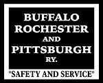

Rochester, New York

The Buffalo,
Rochester & Pittsburg began unloading coal along
the Genesee River in 1889, loading coal into
ships for
transport across Lake Ontario to Canada. Eventually a
huge steel trestle was built along the river shore,
at the end of
Boxart street.
The B&O took over the BR&P in 1932, and today the Genesee Docks is mostly remembered as a B&O facility.
The steel trestle was demolished and removed in 1974, and the spur to the docks was removed.
see "A
history of Rochester Railroads" for more
information on how the BR&P and the B&O fit
into the history of
Rochester
railroading.
Today, the
site of the docks is part of Turning Point Park, and
the right of way of the main tracks to the docks has
been turned
into paved trails.
The
remaining BR&P-B&O tracks in Rochester are
today operated by the Rochester
&
Southern Railroad.

Photo from
the Rochester,
NY
Library collection.

This photo is
from the location of today's Turning Point Park
overlook,
right off the
parking lot. (based on the wood railing in the
foreground,
it appears
the area was also an overlook back then.)
"Mouse-over" the image below to toggle between 1926 and 2007.

The 1926 map
is from a Rochester city "Plat Map", in the collection
of the Rochester Library.
More maps,
and lots of historic photos can be found on the
Rochester Library's Rochester
Images page.
The 2007
Aerial photo is from http://maps.live.com
be sure to
check out the "birds eye views"! where you can find
photos like this:

Thats a look
at the Docks area today, looking West..concrete
supports for the main trestle are still visable
right on the
river edge, left side of the photo above.
Same area, looking South:

Those "Birds
eye Views" are created by a company called Pictometry,
which is based in Rochester!
Scot
Lawrence
Rochester,
NY